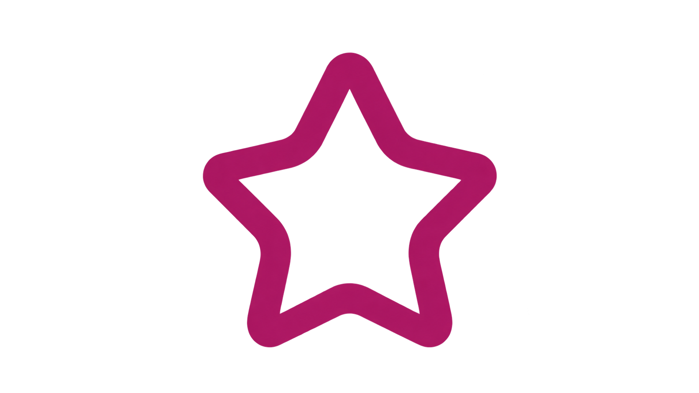

Bisma Kanwal
Full Stack Developer
Full Stack Developer
Crafting digital experiences with code, creativity, and purpose
WHO I AM
I'm Bisma Kanwal, a Full Stack Developer focused on creating meaningful products that combine functionality with clean, thoughtful design. I transform complex challenges into simple, performant, and user-friendly solutions — from designing responsive front-ends to building robust APIs. Outside of coding, I explore new tech and share knowledge with the developer community.
MY JOURNEY
The path that shaped my career
Began my journey into web development by building a strong foundation in HTML, CSS, and JavaScript. Gradually progressed into modern frameworks like React and Node.js, focusing on writing clean, structured code and understanding core development practices.
Interned at InvexTech Software Development as a Front-End Development Intern, where I built responsive, cross-browser web interfaces for multiple client-facing projects using HTML5, CSS3, JavaScript, and React.js. Collaborated closely with cross-functional teams to translate UI/UX wireframes into pixel-perfect, functional components while meeting project deadlines.
Expanded my skills into full stack development by building complete, functional applications from front-end to back-end. Developed a login and authentication system, a personal portfolio website, and several interactive web apps using React, Node.js, and Express.js — gaining hands-on experience with REST APIs, client-server communication, and component-based architecture..
Years Learning
Projects Completed
Client Projects
Commitment To Quality
MY VALUES
Principles that guide my work
Embracing new ideas and modern solutions to solve problems creatively
Delivering consistent, dependable code and solutions you can trust
Working closely with teams and clients to build products together

Committed to clean code, best practices, and attention to detail